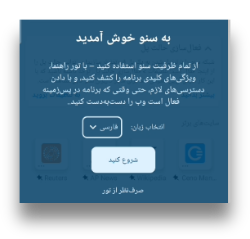
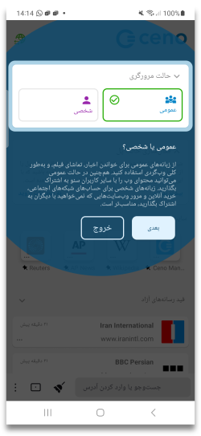
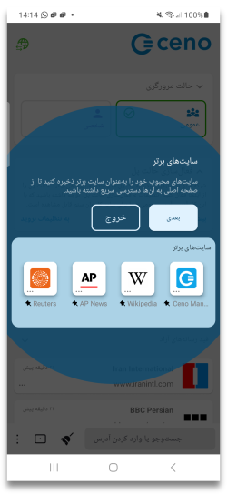
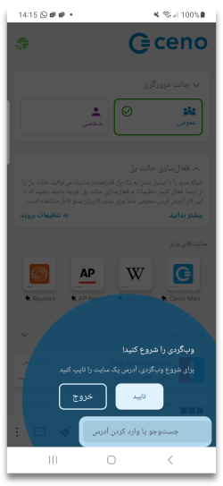
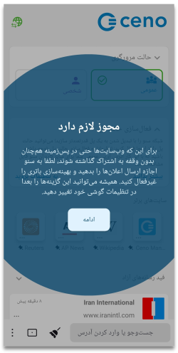
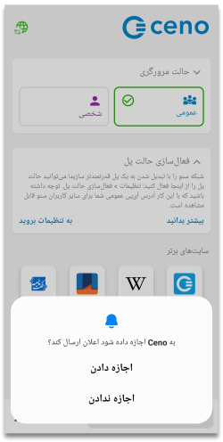
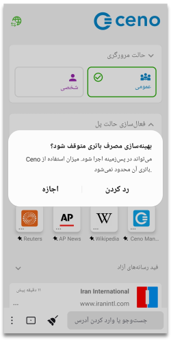

First time run
Guided tour
When you run your Ceno app for the first time, you will be invited to a small guided tour around the main Ceno features, which you can accept (by tapping on the ‘Get Started’ button) or skip (by tapping ‘Skip the tour’)
The tour will take you through the most important features, as shown by the following screens.
  
مجوزها
At the end of the Tour, you will be asked to give Ceno the permissions it needs for optimal functioning:

When you tap on Continue, depending on the version of Android that you have on your phone, you will be required to give Ceno permissions to send you notifications and to disable battery optimisation. Some Android versions require both, and some just the permission to disable the battery optimisation.
اعلانها

When you allow Ceno to send you notifications, the app will display the Ceno icon in your notification bar.

The icon will appear when you access the first website.
This icon represents the Ceno Browser service, which is the part of Ceno that
runs permanently (even when you are not browsing) and allows other ceno users to
retrieve content from it at any time. Since running such service uses network
and processor resources, you may want to stop it whenever you are on the move
(i.e. not connected to Wi-Fi or far from a charger).
Tapping on the Stop button will stop both Ceno and its service at once (until
you open Ceno again).

Tapping on the Clear button will open another small notification

Tapping on Yes will delete not only the cached data in the Ceno app on your device, but also any customization settings, such as default address bar position, or light theme, or your favorites and other settings you may have chosen. If you tap on the Yes action, Ceno will be stopped and all its data removed without further questions, effectively leaving your device as if Ceno had never been used.
Warning: Android may still keep other traces of having used an app besides its data, for instance in its system log
Stop battery optimising usage

This option is usually present in apps that need to run in the background even when not actively used, which is the case with the Ceno app. Under normal conditions, your android phone will try to optimise the battery usage of various apps that may be running on your device. Your phone's operating system does this to prolong the battery life between the two charging sessions. In order to do this, it sometimes stops the apps that are running and using the battery, but are not actively used by you. When you allow Ceno to stop optimising the battery usage, your phone's operating system will be less likely to stop your Ceno app when you are not actively using it. Allowing your Ceno app to run even when not actively used helps the whole Ceno peer-to-peer network to run better and to respond to more user requests. When you allow this option you are helping all users within the Ceno network.